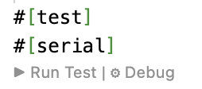

HAMR Rust Thread Component Development - Manual Unit Testing
Recall that HAMR auto-generates support for three types of thread component testing:
- manual tests - the developer supplies manually-constructed inputs (a test vector) for input ports, runs the component, and checks output ports against manually indicated expected results,
- manual GUMBOX tests - the developer supplies manually constructed inputs for input ports and then uses an automatically generated test API call to check that the component application code outputs (together with the supplied inputs) conform to an executable version of the component’s model-level GUMBO contracts (referred to as the GUMBO eXecutable, i.e., GUMBOX contract),
- automated randomized GUMBOX tests (property-based testing) - the developer users HAMR auto-generated random-value generators to generate component inputs and HAMR auto-generated APIs to test that the component inputs/outputs conform to GUMBOX contracts.
These three styles of testing provide increasing levels of automation. Illustrations of each style of testing can be found in HAMR tutorial examples, e.g., here are the tests for the thermostat component of the Simple Isolette Example (periodic threads, with data ports).
In this chapter, we describe HAMR manual unit tests for Rust-based thread components. The other forms of testing build off of the APIs and concepts presented here.
Example Files
This documentation uses the Simple Isolette system with periodic threads and data ports as a running example. If you want to browse the code and run the tests described here, you can download/clone the HAMR tutorials repository and work with the system in the HAMR-SysMLv2-Rust-seL4-P-DP-Example folder.
The SysMLv2 declaration of the thermostat thread from that example is given below. If you haven’t studied HAMR GUMBO contracts yet, you can ignore all of the content of the language "GUMBO" block below. You’ll be able to learn about the HAMR manual unit tests without knowing GUMBO (though understanding GUMBO is required for both the GUMBOX manual tests and automated property-based testing).
The intutition behind the thread behavior is as follows. On each dispatch of the compute entry point, the thread will receive a current_temp temperature value an desired_temp range implemented as a struct containing an lower and upper temperature bound. The application logic will compare the current_temp to the desired temp range, and follow some simple control logic to make a decision to send an on/off heat_control command. In the control laws, the command to send is sometimes based on the previously sent command, which is held in the state variable lastCmd. You can find the thread implementation in the timetriggered method here.
//===============================================================================
//
// T h e r m o s t a t Thread
//
//===============================================================================
part def Thermostat :> Periodic_Rust_Thread {
//-- I n t e r f a c e --
port current_temp : DataPort { in :>> type : Isolette_Data_Model::Temp; }
port desired_temp : DataPort { in :>> type : Isolette_Data_Model::Set_Points; }
port heat_control : DataPort { out :>> type : Isolette_Data_Model::On_Off; }
//-- B e h a v i o r C o n s t r a i n t s --
language "GUMBO" /*{
state
lastCmd: Isolette_Data_Model::On_Off;
functions
// -- desired bounds on temperature values in the thermostat
def Temp_Lower_Bound(): Base_Types::Integer_32 := 95 [i32];
def Temp_Upper_Bound(): Base_Types::Integer_32 := 104 [s32];
//-- == I n t e g r a t i o n C o n s t r a i n t s
integration
assume ASSM_CT_Range:
//-- Literals used in spec below
Temp_Lower_Bound() <= current_temp.degrees & current_temp.degrees <= Temp_Upper_Bound();
//-- == I n i t i a l i z e E n t r y P o i n t Behavior Constraints ==
initialize
guarantee //-- note: anonymous guarantee clause
initlastCmd: lastCmd == Isolette_Data_Model::On_Off.Off;
guarantee REQ_THERM_1 "The Heat Control command shall be Off initially.":
heat_control == Isolette_Data_Model::On_Off.Off;
//-- ====== C o m p u t e E n t r y P o i n t Behavior Constraints =====
compute
// -- we assume that Operator Interface enforces the contraint below on incoming
// set points (desired temperature range)
assume ASSM_LDT_LE_UDT: desired_temp.lower.degrees <= desired_temp.upper.degrees;
//-- the lastCmd state variable is always equal to the value of the heat_control output port
guarantee lastCmd "Set lastCmd to value of output Cmd port":
lastCmd == heat_control;
compute_cases
case REQ_THERM_2 "If Current Temperature is less than
|the Lower Desired Temperature, the Heat Control shall be set to On.":
assume (current_temp.degrees < desired_temp.lower.degrees);
guarantee heat_control == Isolette_Data_Model::On_Off.Onn;
case REQ_THERM_3 "If the Current Temperature is greater than
|the Upper Desired Temperature, the Heat Control shall be set to Off.":
assume (current_temp.degrees > desired_temp.upper.degrees);
guarantee heat_control == Isolette_Data_Model::On_Off.Off;
case REQ_THERM_4 "If the Current Temperature is greater than or equal
|to the Lower Desired Temperature
|and less than or equal to the Upper Desired Temperature, the value of
|the Heat Control shall not be changed.":
assume (current_temp.degrees >= desired_temp.lower.degrees
& current_temp.degrees <= desired_temp.upper.degrees);
guarantee heat_control == In(lastCmd);
}*/
}
Relevant Infrastructure and Application Testing Files
Recall that the code for each Rust-based HAMR thread is organized in a crate. HAMR code generation will generate a folder in the crate for supporting component testing (e.g., for the thermostat component, ..crates/thermostat_thermostat/src/test). The general structure of the testing folder for an arbitrary component is as follows…
test/ # Test infrastructure
mod.rs # [auto-gen] Module declarations
tests.rs # [EDITABLE] Unit tests and property-based test configurations
util/
mod.rs # [auto-gen] Module declarations
test_apis.rs # [auto-gen] Test helper APIs: put_/get_ for ports and GUMBO state variables, PreStateContainer structs
cb_apis.rs # [auto-gen] Contract-based test harness: testInitializeCB, testComputeCB, testComputeCBwGSV, PropTest macros
generators.rs # [auto-gen] PropTest value generators for each data type (default and customizable strategies)
From these files, the primary file relevant to developer is tests.rs. This is the default file used by the developer for writing tests for component, and it will not be modified by HAMR after initial code generation. In this documentation, we will assume that tests are always written in tests.rs, but tests may be separated into different files, using mod.rs to refer to those files (HAMR will not modify mod.rs after initial code generation).
HAMR will generate examples of how to write tests in the three styles above in the initial version of tests.rs (e.g., for the thermostat component).
In the util folder, HAMR generates helper methods used for the three styles of testing:
test_apis.rscontains the base methods putting test inputs into component input ports, invoking component entry points, and getting outputs from component input ports.cb_apis.rscontains test harnesses forcb=“contract-based”. These test harnesses utilize the auto-generated GUMBOX executable versions of GUMBO contracts and aggregate the steps of receiving an input test vector, checking the input test vector against GUMBOX pre-condition, running a component entry point, retrieve output values and checking the inputs/outputs using the GUMBOX post-condition.generators.rscontains HAMR-generated random value generators component inputs built using the PropTest framework.
test_apis.rs is most relevant for this chapter, and it is recommended to read through that file (e.g., for the thermostat component as concepts are discussed below.
Manual Unit Tests for Thread Entry Points
The application code for a HAMR thread component is held in two entry points, as explained in the
“HAMR Modeling Elements and Semantics Concepts” chapter and as seen in the thermostat application code. The tests for these have slightly different structure. For manual unit tests, the outline of test methods is as follows.
-
Initialize Entry Point Tests - the Initialize Entry Point does not read component input ports or local state; it only writes to output ports and local state. Therefore, tests for a thread Initialize Entry Point will have following structure:
- (a) run the entry point method,
- (b) retreive the results from output ports and local state, and
- (c) check that the outputs match expected results,
-
Compute Entry Point Tests - tests for a thread Compute Entry Point will have following structure:
- (a) run the Initialize Entry Point method to ensure that component state is properly initialized,
- (b) supply values (test vector) for input ports (and optionally, local state variables)
- (c) run the Compute entry point method,
- (d) retreive the results from output ports and local state,
- (e) check that the outputs match expected results.
Excerpts of the initial HAMR-generated version of the tests.rs for the thermostat component) are shown below (some additional comments have been added in the code associated with the outlines above).
Note that the file has two modules: one for manual unit tests, and one for GUMBOX tests.
mod tests {
// NOTE: need to run tests sequentially to prevent race conditions
// on the app and the testing apis which are static
use serial_test::serial;
use crate::test::util::*;
use data::*;
#[test]
#[serial]
fn test_initialization() {
// (a) run the entry point method,
crate::thermostat_thermostat_initialize();
// (b) retreive the results from output ports and local state, and
// (c) check that the outputs match expected results,
}
#[test]
#[serial]
fn test_compute() {
// (a) run the Initialize Entry Point method to ensure that component state is properly
// initialized
crate::thermostat_thermostat_initialize();
// (b) supply values (test vector) for input ports (and optionally, local state variables)
test_apis::put_current_temp(Isolette_Data_Model::Temp::default());
test_apis::put_desired_temp(Isolette_Data_Model::Set_Points::default());
// (c) run the Compute entry point method,
crate::thermostat_thermostat_timeTriggered();
// (d) retreive the results from output ports and local state,
// (e) check that the outputs match expected results.
}
}
mod GUMBOX_tests {
// .. details omitted
}
This above structure is only a suggestion. In each module, some example skeleton tests are provided. The developer is free to reorganize these modules or even separate them into different files as explained above. If you test files are created, test/mod.rs will need to be updated to reference those files. For example, if you added new files test/manual_unit_tests.rs and test/manual_GUMBOX_tests.rs, test/mod.rs will need to be updated to look something like this…
// This file will not be overwritten if HAMR codegen is rerun
pub mod util;
pub mod tests;
pub mod manual_unit_tests; // reference to new test file added
pub mod manual_GUMBOX_tests; // reference to new test file added
Returning to the listing above, note that the auto-generated HAMR skeletons don’t illustrate all aspects of the tests, e.g., retrieving outputs and comparing to expected results are not provided, since those are often test-specific. We will illustrate how these aspects to coded below.
We first discuss the more general Compute Entry Point tests.
Compute Entry Point Tests
We’ll illustrate some concepts using the tests in the completed tests.rs for the thermostat thread.
Here’s a slightly expanded sketch of the typical actions that we would perform in our tests.
#[test]
#[serial]
fn test_compute() {
// initialize entry point should always be called to initialize
// output ports and local state
crate::thermostat_thermostat_initialize();
// implement input of "test vector"
// ..set values for input data ports
test_apis::put_current_temp(Isolette_Data_Model::Temp::default());
test_apis::put_desired_temp(Isolette_Data_Model::Set_Points::default());
// ..[optional] set values for GUMBO-declared local state variables
test_apis::put_lastCmd(Isolette_Data_Model::On_Off::default());
// invoke compute entry point
crate::thermostat_thermostat_timeTriggered();
// use auto-generated test APIs to retrieve values of
// output ports and GUMBO-defined local state as illustrated below
// let heat_control: On_Off = test_apis::get_heat_control();
// let post_lastCmd : On_Off = test_apis::get_lastCmd();
// ..compare outputs to expected results..
// assert!(..)
}
First, we see the call of the initialize entry point to initialize the state of the thread as explained earlier.
Then, we use auto-generated apis to set the input values for the thread. In the auto-generated examples, HAMR uses the default() values. When constructing an actual test, these should be replaced with actual values.
All of the auto-generated APIs for putting and getting values from ports for the component can be found in the util/test_apis.rs file. Note that several variations of put methods are generated, including versions with multiple parameters (one for each component input). These versions are straightforward to understand by looking at the source code; some will be illustrated below in discussion of “containers”.
Note that if the thread has GUMBO state variables declared in the model-level GUMBO contracts, HAMR will generate a helper method such as put_lastCmd above for mutating the state of the auto-generated local state variable. While setting the GUMBO state variables is optional (they already have a value set by the initialize entry point), setting the input values for the input ports is required for data ports. If the test fails to set the input values for all data ports, a run-time exception will result (this follows the AADL philosophy that threads should not set the values of their input ports, so the external test must set the values to avoid an exception).
Following the invocation of the compute entry point, get apis are used to retrieve relevant values from output port (e.g., test_apis::get_heat_control) and/or the update values of local state variables (e.g., test_apis::get_lastCmd()).
A Basic Compute Entry Point Test
A good strategy for writing a test is to begin with comments that explain the intent of the test. When natural language requirements for the thread have been written, it is good to reference the requirement that the test is addressing.
As part of this documentation, it is good to summarize the designed inputs (test vector) and then indicate the expected outcomes. Sometimes, a particular input needs to be provided (to avoid a run-time exception), but its value is (conjectured to be) irrelevant to the test. It’s useful to document these situations.
//========================================================================
// REQ-THERM-2: If Current Temperature is less than the Lower Desired Temperature,
// the Heat Control shall be set to On.
//========================================================================
/*
Inputs:
current_temp: 95f
lower_desired_temp: 98f
upper_desired_temp: *irrelevant to requirement* (use 100f)
Expected Outputs:
heat_control: On
last_cmd (post): On
*/
#[test]
#[serial]
fn test_compute_REQ_THERM_2() {
// [InvokeEntryPoint]: invoke the entry point test method
crate::thermostat_thermostat_initialize();
// generate values for the incoming data ports
let current_temp = Temp { degrees: 95 };
let lower_desired_temp = Temp { degrees: 98 };
let upper_desired_temp = Temp { degrees: 100 };
let desired_temp = Set_Points {lower: lower_desired_temp, upper: upper_desired_temp};
// [PutInPorts]: put values on the input ports
test_apis::put_current_temp(current_temp);
test_apis::put_desired_temp(desired_temp);
// [InvokeEntryPoint]: Invoke the entry point
crate::thermostat_thermostat_timeTriggered();
// get result values from output ports
let api_heat_control = test_apis::get_heat_control();
let lastCmd = test_apis::get_lastCmd();
assert!(api_heat_control == On_Off::Onn);
assert!(lastCmd == On_Off::Onn);
}
In the construction of the test, you can see concrete input values constructed using the expected Rust code matching the data types of the ports and state variables.
Finally, several different styles are possible for asserting the correspondence to expected results. In the example above, a separate assert! is used for each port value. These could also be combined into a single assert with a conjunction, or other richer forms of assertions could be used.
Running Tests
Within VSCode with the Rust Analyzer extension installed (CodeIVE automatically includes the Rust Analyzer), a single test can be run by clicking on the “Run Test” VSCode annotation above each test method.

VSCode injects a similar annotation exists at the top of each Rust module used for testing, and clicking on that annotation runs all the tests in the module.
All the tests for a crate can be run from the command line using make test in the root folder of the crate. Looking at the make file for the crate (e.g., for the thermostat shows that the tests can be selected by substrings appearing in the test name as shown in the make file inline documentation below.
# Test Example:
# Run all unit tests
# Usage: make test
#
# Run only unit tests whose name contains 'proptest'
# Usage: make test args=proptest
Finally, there is a top-level make file for all the crates in top-level folder for the seL4 microkit HAMR generated folder (e.g., hamr/microkit), and all the tests for all crates can be run with make test from the command line at the level of the microkit folder.
If you have cloned or downloaded the HAMR Tutorials repository, now would be a good time to actually run some of the thermostat tests using one of the methods above.
Test Vectors – Aggregating Component Inputs
Sometimes it is useful to aggregate all input values for a component into a single structure. HAMR auto-generates data structures and auxiliary functions for this purpose. This support will be used extensively in GUMBOX-based testing, but you may also find them useful for HAMR manual tests.
The potential benefits of using the containers for test inputs are as follows.
- You can declare and name test vectors so that they can be used in multiple places or so the name for a particular test vector can be traced so some form of documentation external to the test code.
- Since containers are Rust structs, and Rust requires struct elements to be named when constructing the struct, defining test inputs are a bit more robust to changes. For example, when generating apis (including test infrastructure methods) for components, HAMR uses a default ordering for arguments. If the model-level component type for a component is modified or if the HAMR strategy for ordering arguments is changed, test inputs “passed by position” would become invalid, while test inputs passed by name to the contrainer/struct may still be valid.
- Related to the above, since containers/structs are always built by naming values using component port names, this ensures a consistent code-based documentation and traceability to the original port names.
The util/test_apis.rs file contains declarations of Rust structs referred to in HAMR parlance as “containers”. For testing, HAMR generates “pre-state” containers to hold values for each component input. There are two versions of containers: one that holds only input port values and another holds input values for GUMBO state variables in addition to port input values (HAMR generates this second version only if GUMBO state variables are declared).
Below are the containers generated for the thermostat component.
/// container for component's incoming port values
pub struct PreStateContainer {
pub api_current_temp: Isolette_Data_Model::Temp,
pub api_desired_temp: Isolette_Data_Model::Set_Points
}
/// container for component's incoming port values and GUMBO state variables
pub struct PreStateContainer_wGSV {
pub In_lastCmd: Isolette_Data_Model::On_Off,
pub api_current_temp: Isolette_Data_Model::Temp,
pub api_desired_temp: Isolette_Data_Model::Set_Points
}
In the util/test_apis.rs file,
HAMR auto-generates variants of the put methods that take these containers as arguments.
/// setter for component's incoming port values
pub fn put_concrete_inputs_container(container: PreStateContainer)
{
put_current_temp(container.api_current_temp);
put_desired_temp(container.api_desired_temp);
}
/// setter for component's incoming port values and GUMBO state variables
pub fn put_concrete_inputs_container_wGSV(container: PreStateContainer_wGSV)
{
put_lastCmd(container.In_lastCmd);
put_current_temp(container.api_current_temp);
put_desired_temp(container.api_desired_temp);
}
The following version of the previous test for Requirement 2 of the thermostat illustrates the use of the container features above.
#[test]
#[serial]
fn test_compute_REQ_THERM_2_container() { // Alternate version: Illustrate "container"-based APIs
// [InvokeEntryPoint]: invoke the entry point test method
crate::thermostat_thermostat_initialize();
// Inputs can be "bundled" into a container and put "all at once".
// There are two versions Pre-State-Container: one without inputs
// for GUMBO state variables (GSV) and one that includes them. Below
// illustrates the version without. In this case, GSVs retain
// whatever value they have at the time of the Compute entry point
// (timeTriggered method) invocation.
let preStateContainer = test_apis::PreStateContainer {
api_current_temp : Temp { degrees: 95},
api_desired_temp : Set_Points {
lower: Temp { degrees: 98 },
upper: Temp { degrees: 100 }
}
};
// [PutInPorts]: put values on the input ports
test_apis::put_concrete_inputs_container(preStateContainer);
// [InvokeEntryPoint]: Invoke the entry point
crate::thermostat_thermostat_timeTriggered();
// get result values from output ports
let api_heat_control = test_apis::get_heat_control();
let lastCmd = test_apis::get_lastCmd();
assert!(api_heat_control == On_Off::Onn);
assert!(lastCmd == On_Off::Onn);
}
Generating Coverage Reports
Looking at how much of a component’s code (and how much of its GUMBOX contract oracles) is actually exercised by the test suite is one of the most direct ways to gauge the quality of your testing. HAMR generates a coverage Make target in each component crate that wraps the standard Rust source-based code-coverage workflow (LLVM instrumentation + grcov).
Running make coverage
From the root of any component crate (e.g., ..crates/thermostat_thermostat/), simply run:
make coverage # build with coverage instrumentation, run all tests, render HTML
make coverage args=proptest # restrict to tests whose name contains "proptest"
Looking at the coverage rule in the crate Makefile, the target
- installs
grcovif it is not already onPATH(cargo install grcov), - clears
target/coverage/and re-runscargo testwithRUSTFLAGS='-Cinstrument-coverage'andLLVM_PROFILE_FILE='target/coverage/cargo-test-%p-%m.profraw'(so each test process drops a profile file undertarget/coverage/), and - invokes
grcovto merge those profiles and emit an HTML report.
The args= parameter is forwarded to cargo test, so the same name-substring filter that works for make test works for make coverage.
Where the report lives
The rendered HTML report is written to
<crate>/target/coverage/report/
with index.html as the top-level entry point. The page summarizes line-, function-, and (where available) branch-coverage percentages for the crate as a whole, and links to per-directory and per-file pages that show each source line annotated with hit counts and red/green/yellow shading.
On macOS, the Make target tries to open target/coverage/report/index.html in your default browser the first time it generates a report (it tests for an existing index.html and only invokes open when none was present). Subsequent runs do not re-open the browser; you can re-view the report any time by opening that index.html manually, and you can force the auto-open behavior to fire again by deleting target/coverage/ before running the target.
What to look at first
For a HAMR thread component, two files dominate the “is my testing actually exercising the component?” question:
-
src/component/<component>_app.rs— your hand-written application code. Focus on coverage of theinitializeandtimeTriggered(or sporadic-handler) bodies. The same file also contains seL4/Microkit error-handling helpers (e.g.,notify,log_warn_channel) that are not normally exercised by unit tests; it is fine for those to remain uncovered. -
src/bridge/<component>_GUMBOX.rs— the auto-generated executable versions of the GUMBO contracts (one boolean function per integration constraint, initialize guarantee, andcompute_case). These are only relevant when you run GUMBOX-style tests (manualcb_apis::testComputeCB...calls and thetestComputeCB_macro!propTest macros); pure manual unit tests never call them. When you do use them, GUMBOX coverage tells you whether each contract case is actually being driven by your inputs.
Example: full thermostat test suite
Running make coverage against the unmodified tests.rs for the thermostat component (19 tests covering REQ_THERM_1 through REQ_THERM_4, in manual, manual-GUMBOX, and propTest variants) produces this report:
- Top-level coverage report (full suite) — 90.93% line coverage overall.
thermostat_thermostat_app.rs— 85.44% lines (88/103); the only gaps are the seL4notify/ logging helpers.thermostat_thermostat_GUMBOX.rs— everycompute_case_REQ_THERM_*body shows a non-zero hit count for both the antecedent and consequent of itsimplies!clause.
Example: a reduced suite that exposes coverage gaps
To illustrate what missing coverage looks like, we replaced tests.rs with a deliberately thin version that keeps only:
test_initialization_REQ_THERM_1— exercises the initialize entry point,test_compute— exercisestimeTriggered, but withTemp::default()/Set_Points::default()(i.e., all fields equal to 0), so the temperature comparisons insidetimeTriggerednever trigger either of the inequality branches,test_compute_GUMBOX_manual_1_a— a single manual GUMBOX test usingcurrent_temp = 98againstlower=98 / upper=100, i.e., inputs that exercise only REQ_THERM_4.
The full reduced source is shown below (also available as a downloadable file):
mod tests {
use serial_test::serial;
use crate::test::util::*;
use data::*;
use data::Isolette_Data_Model::*;
#[test]
#[serial]
fn test_initialization_REQ_THERM_1() {
crate::thermostat_thermostat_initialize();
let heat_control: On_Off = test_apis::get_heat_control();
let post_lastCmd : On_Off = test_apis::get_lastCmd();
// REQ_THERM_1: The Heat Control command shall be initially Off
assert!(heat_control == On_Off::Off);
assert!(post_lastCmd == On_Off::Off);
}
// Default-valued inputs leave currentTemp.degrees neither greater than the
// upper bound nor less than the lower bound, so timeTriggered only executes
// the REQ_THERM_4 fall-through path.
#[test]
#[serial]
fn test_compute() {
crate::thermostat_thermostat_initialize();
test_apis::put_current_temp(Isolette_Data_Model::Temp::default());
test_apis::put_desired_temp(Isolette_Data_Model::Set_Points::default());
test_apis::put_lastCmd(Isolette_Data_Model::On_Off::default());
crate::thermostat_thermostat_timeTriggered();
}
}
mod GUMBOX_manual_tests {
use serial_test::serial;
use crate::test::util::*;
use data::Isolette_Data_Model::*;
// Manual GUMBOX test that exercises only the REQ_THERM_4 case
// (current_temp 98 lies inside the desired range [98, 100]).
#[test]
#[serial]
fn test_compute_GUMBOX_manual_1_a() {
crate::thermostat_thermostat_initialize();
let current_temp = Temp { degrees: 98 };
let lower_desired_temp = Temp { degrees: 98 };
let upper_desired_temp = Temp { degrees: 100 };
let desired_temp = Set_Points { lower: lower_desired_temp, upper: upper_desired_temp };
let last_cmd = On_Off::Onn;
let harness_result =
cb_apis::testComputeCBwGSV(last_cmd, current_temp, desired_temp);
assert!(matches!(harness_result, cb_apis::HarnessResult::Passed));
}
}
The corresponding coverage run drops to 65.35% overall:
Gap 1: timeTriggered branches
Open thermostat_thermostat_app.rs and scroll to the control-logic block (around line 117). Both inequality branches show as uncovered (red, hit count 0):
L117 [4 hits] if (currentTemp.degrees > desired_temp.upper.degrees) {
L118 [0 hits] // REQ-THERM-3
L119 [0 hits] currentCmd = On_Off::Off;
L120 [4 hits] } else if (currentTemp.degrees < desired_temp.lower.degrees) {
L121 [0 hits] assert(...);
L122 [0 hits] // REQ-THERM-2
L123 [0 hits] //currentCmd = On_Off::Off; // seeded bug/error
L124 [0 hits] currentCmd = On_Off::Onn;
L125 [4 hits] }
The if and else if conditions are evaluated on every test invocation (4 hits = 3 invocations from the manual tests + 1 from the GUMBOX harness), but neither ever takes its true branch. The reason is intuitive: test_compute uses Temp::default() (degrees 0), so 0 is neither greater than nor less than 0, and the GUMBOX test deliberately picks current_temp = 98 inside the desired range. No test in the reduced suite drives current_temp outside the desired range, so the REQ_THERM_2 and REQ_THERM_3 code paths are never reached.
Gap 2: GUMBOX case oracles
Open thermostat_thermostat_GUMBOX.rs and look at the three compute_case_REQ_THERM_* functions. Each one is called on every GUMBOX run (because compute_CEP_T_Case aggregates all three), so the function signature and implies!(...) line show 2 hits each. But the consequent of each implication is only evaluated when its antecedent is true:
compute_case_REQ_THERM_2:
L165 [2 hits] api_current_temp.degrees < api_desired_temp.lower.degrees,
L166 [0 hits] api_heat_control == Isolette_Data_Model::On_Off::Onn)
compute_case_REQ_THERM_3:
L182 [2 hits] api_current_temp.degrees > api_desired_temp.upper.degrees,
L183 [0 hits] api_heat_control == Isolette_Data_Model::On_Off::Off)
compute_case_REQ_THERM_4:
L203 [2 hits] (api_current_temp.degrees >= api_desired_temp.lower.degrees) &
L204 [2 hits] (api_current_temp.degrees <= api_desired_temp.upper.degrees),
L205 [2 hits] api_heat_control == In_lastCmd)
Only the REQ_THERM_4 oracle’s consequent is actually checked, because that is the only case whose pre-condition is satisfied by the test inputs. The REQ_THERM_2 and REQ_THERM_3 oracles are vacuously true on every call (!false || _ short-circuits to true), so the code that would actually compare heat_control against the expected value is never executed. This is precisely the signal that the auto-generated propTest macros are designed to fix: by sweeping inputs across the full range of each generator, they drive the antecedent of every case to true at least once, lighting up the consequent.
A useful rule of thumb: high coverage of *_GUMBOX.rs (especially the consequent lines of each compute_case_* body) tells you that your tests are actually exercising the contract. It does not by itself say the contract is correct; that is what manual unit tests and contract reviews are for.